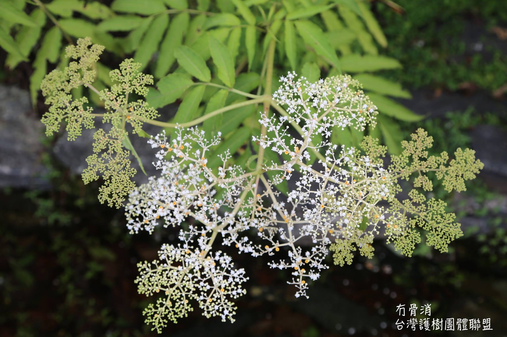

關心，從了解開始-冇骨消
護樹協會 September,25,2015
忍冬科(Caprifoliaceae)蒴藋屬(Sambucus)
台灣、中國大陸 最近在野外時常可以看見『冇骨消』，拍蝴蝶的人會去找冇骨消，因為這是蜜源植物。
衛生福利部國家中醫藥研究所很詳細的介紹冇骨消的功能，看完之後.....Wow......有了冇骨消健保支出應該可以省下很多吧！
消腫散瘀、舒經活絡袪風及消炎解毒的功效；主治骨折疼痛、跌打損傷、扭傷腫痛、癰毒腫瘤、風濕骨痛、神經炎、皮膚炎、腰痛等。莖葉具有利尿解熱、消腫活血止痛的功用；肺炎、腫毒惡瘡、癰疔、淋病、腳爛、腎炎水腫、腰膝痠痛。外用治跌打損傷，治無名腫毒，治腎結石，治中風，糖尿病，骨質疏鬆，愛滋病，消炎鎮痛，抗病毒.....
每一個古老的文明都有利用植物醫治疾病的方式承傳，在德國海德堡大學甚至有一個德國草藥利用的展示空間，與傳統的中草藥展示空間非常相像，植物裡面藏著人類目前所不知道的秘密實在是太多了。
不過最近老編出去看樹看植物的時候看到一個很令人傷心害怕的現象，就是即使在海拔3000公尺的山上，只要有人類利用土地的地方都可以看到濫用除草劑的情形發生，對於蜜蜂和蝴蝶的消失和是不是會有變異的種類演化成為『抗除草劑』就需要更多的資源去研究了。
人類毀滅自己的方式實在是很不可思議，這是超神奇的冇骨消也拯救不了的！